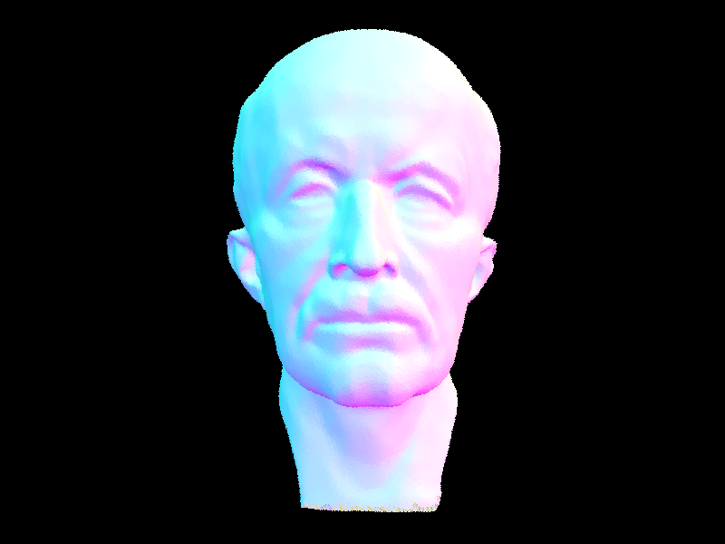
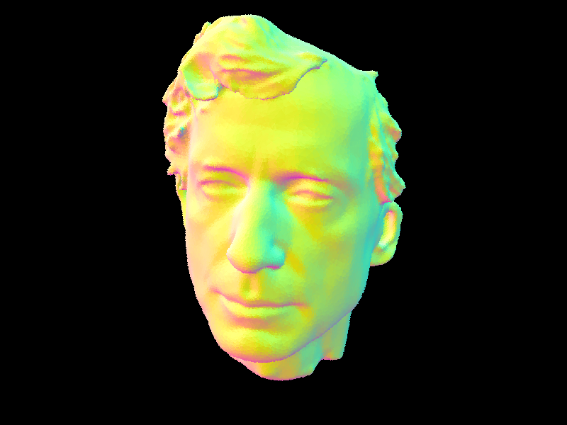
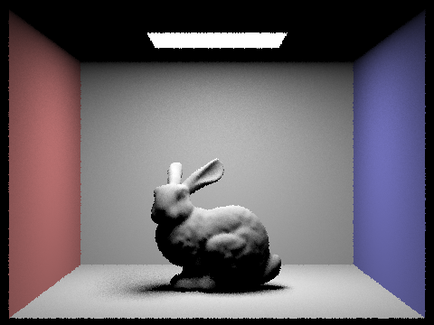
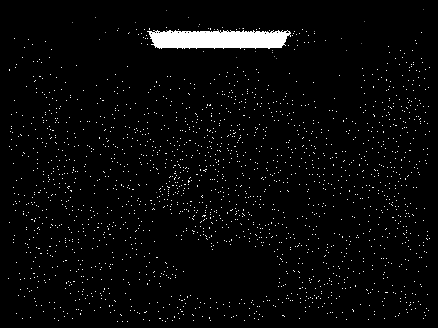
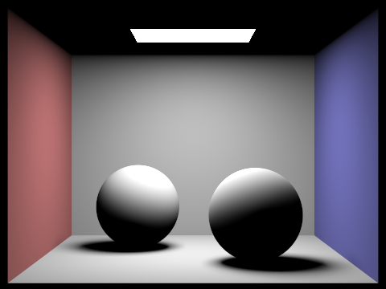
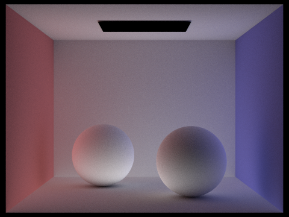
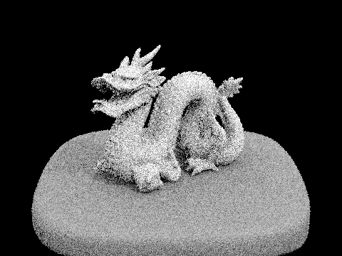

Project 3-1: Pathtracer
Abdul Ali Khan, Zachary Zollman
Overview
This project is focused on implementing a basic Path Tracer which is a rendering technique that simulates the behavior of light in a scene by tracing the path of light rays as they bounce around and interact with objects in the scene. The project is divided into five parts, each focusing on a different aspect of the Path Tracer.In Part 1, we implemented the basic ray generation and primitive intersection parts of the rendering pipeline. We also explained the triangle intersection algorithm used to determine if a ray intersects a triangle in the scene. In Part 2, we implemented a Bounding Volume Hierarchy (BVH) construction algorithm to speed up rendering times for scenes with complex geometry. We explained the heuristic used to pick the splitting point and compared rendering times with and without BVH acceleration. In Part 3, we implemented both uniform hemisphere sampling and light sampling for the direct lighting function. We compared noise levels in soft shadows for different numbers of light rays and samples per pixel. In Part 4, we implemented the indirect lighting function and compared rendered views with only direct illumination and only indirect illumination. We also compared views with different maximum ray depths and sample-per-pixel rates. In Part 5, we implemented adaptive sampling and rendered two scenes with clearly visible differences in sampling rates over various regions and pixels.
Overall, this project provided an in-depth understanding of various concepts related to the Path Tracer, including ray tracing, Bounding Volume Hierarchies, direct and indirect lighting functions, and adaptive sampling. The project allowed us to implement these concepts in code and compare the results with different settings and parameters. We also gained a better understanding of the importance of optimization techniques to achieve faster rendering times for complex scenes.
Part 1: Ray Generation and Scene Intersection
Walk through the ray generation and primitive intersection parts of the rendering pipeline.
The rendering pipeline starts with the generation of a camera ray for each pixel in the image. For each pixel, theraytrace_pixel function is called which generates ns_aa camera rays and traces them through the scene. In the generate_ray function of the Camera class, given the pixel coordinates (x, y) as input, the position of the input sensor sample coordinate on the canonical sensor plane one unit away from the pinhole is computed. The pinhole camera model is used to map the 2D pixel coordinates onto a 3D ray direction. The ray direction is computed by finding the coordinates on the canonical plane and then transforming from camera space to world space.
In the
raytrace_pixel function of the PathTracer class, ns_aa camera rays are generated and traced through the scene. For each sample, a random offset is added to the pixel coordinates to generate a different camera ray. The generated ray is then passed to the est_radiance_global_illumination function which traces the ray through the scene and computes the radiance at the intersection point. The computed radiance value is accumulated in the c vector. After all the samples are processed, the accumulated radiance values are averaged by dividing by the number of samples, and the resulting color is written to the sample buffer using the update_pixel function of the SampleBuffer class.
Explain the triangle intersection algorithm you implemented in your own words.
The triangle intersection algorithm uses Möller-Trumbore to determine whether a given ray intersects with a triangle in 3D space, and if so, calculates the intersection point and normal vector. First calculate two vectors from the vertices of the triangle, and a third vector from the origin of the ray to one of the triangle vertices. The algorithm then calculates the barycentric coordinates of the intersection point.These coordinates are used to interpolate the normal vector at the intersection point by taking a weighted sum of the normals at the three vertices of the triangle. The intersection point and normal vector are then stored in an Intersection object. There are also checks to make sure the determinant of the matrix is not negative and that the intersection point is within the valid range of the ray's parameters and that barycentric coordinates are within [0,1].
Show images with normal shading for a few small .dae files.


Part 2: Bounding Volume Hierarchy
Walk through your BVH construction algorithm. Explain the heuristic you chose for picking the splitting point.
A BVH is an acceleration structure used to improve rendering performance by reducing the number of ray-primitive intersection tests that need to be performed. It works by recursively subdividing the scene into bounding volumes that contain the primitives in the scene. The BVH is constructed by repeatedly subdividing the bounding volume into two smaller volumes, until a certain termination criterion is reached.Once the BVH is constructed, the renderer can use it to quickly identify which bounding volumes are potentially intersected by a given ray, and test only the primitives that are contained in those volumes. This is done by traversing the BVH tree starting at the root, and recursively testing whether the ray intersects the bounding volume of each internal node. If the ray does not intersect the bounding volume, the entire subtree rooted at that node can be skipped. If the ray does intersect the bounding volume, the traversal continues down to the child nodes, until a leaf node containing a set of primitives is reached. At that point, the renderer tests each primitive in the leaf node to determine whether it intersects the ray.
Show images with normal shading for a few large .dae files that you can only render with BVH acceleration.

Compare rendering times on a few scenes with moderately complex geometries with and without BVH acceleration. Present your results in a one-paragraph analysis.
Rendering runtime speedup with BVH
| file | Initial time | Time with BVH acceleration |
|---|---|---|
| cow.dae | 5.6316s | 0.0385s |
| beetle.dae | 8.3990s | 0.0370s |
| teapot.dae | 2.1325s | 0.0415s |
| maxplanck.dae | 75.1357s | 0.0460s |
By using a BVH, the number of ray-primitive intersection tests can be greatly reduced, especially in scenes with many primitives. For example, in a scene with a large flat plane and many small objects scattered across it, most rays will not intersect the plane, and a BVH can be used to quickly skip the entire plane when testing those rays. Similarly, in a scene with many overlapping objects, a BVH can be used to quickly skip entire groups of objects that are occluded by other objects.
Challenges for this task included constructing the BVH in a manner that divides the mesh both vertically and horizontally; this was addressed by applying the midpoint of each axis individually . Furthermore, finding a split point was difficult and took many iterations but using primitives and sorting them to find mid. For the acceleration portion we were not recursively calling the left and right nodes, which caused feedback issues which were addressed by calling the same function with the node updated to either left or right. Also, our initial has_interaction function was too complicated in the way it calculated if an interaction occurs, so the speedup was only around 2s, rather than the desired 0.0385s. In order to address this problem, we added broader checks that look at the bounding box and ray intersection to determine if interactions in the future might occur. For the rendering of the cow we could see the different primitives and their edges showing on the surface and the expected output was smooth curves. In order to fix this discrepancy we changed the way we interpolated vertex normals with barycentric coordinates instead of Moller-Trumbore as it does not average values between the normals of different primitives.
Part 3: Direct Illumination
Walk through both implementations of the direct lighting function.
Theestimate_direct_lighting_hemisphere function estimates the lighting from a given intersection coming directly from a light source by uniformly sampling a hemisphere. It first constructs a coordinate system at the hit point with the normal vector aligned with the Z direction. Then, it calculates the outgoing direction of the ray and generates a number of samples, for each of which it generates a new ray in a random direction in the hemisphere around the hit point. For each new ray, it checks if it intersects any object in the scene before it reaches a light source, and if so, it calculates the reflectance of the surface at the hit point and multiplies it by the emission of the intersected object, weighted by the cosine of the angle between the normal and the incoming ray. Finally, it averages the accumulated radiance across all the samples to estimate the direct lighting.
The
estimate_direct_lighting_importance function estimates the lighting from a given intersection coming directly from a light source by importance sampling. This function is very similar to estimate_direct_lighting_hemisphere, but instead of uniformly sampling a hemisphere, it samples light sources in the scene. It first generates a number of samples equal to the number of light sources in the scene times a predefined constant ns_area_light, and for each sample, it selects a random point on a randomly selected light source and generates a ray from the hit point to that point. It then checks if the ray intersects any object in the scene before it reaches the light source, and if so, it calculates the reflectance of the surface at the hit point and multiplies it by the emission of the intersected object, weighted by the inverse square of the distance between the hit point and the light source. Finally, it averages the accumulated radiance across all the samples to estimate the direct lighting.
Images rendered with both implementations of the direct lighting function.
Image rendered with 1 light ray using light sampling
Image rendered with 4 light ray using light sampling
Image rendered with 16 light ray using light sampling
Image rendered with 64 light ray using light sampling
Image rendered with 1 light ray using uniform hemisphere sampling
Image rendered with 4 light ray using uniform hemisphere sampling

Image rendered with 16 light ray using uniform hemisphere sampling

Image rendered with 64 light ray using uniform hemisphere sampling

Uniform hemisphere sampling samples points on a hemisphere centered around the surface normal, while lighting sampling only samples points on the surface of light sources in the scene. The advantage of uniform hemisphere sampling is its simplicity and ease of implementation, as well as its ability to capture indirect lighting effects. However, it can lead to a significant amount of noise and inaccuracy in areas of the scene that are not well lit. Lighting sampling, on the other hand, is a more accurate and efficient method for estimating direct lighting since it only samples from light sources, but it requires more complicated implementation and can potentially miss some light sources. In practice, a combination of both techniques is often used to achieve a balance between efficiency and accuracy.
Part 4: Global Illumination
Walk through your implementation of the indirect lighting function.
In order to implement indirect lighting we first need to compute the indirect light that is being emitted from the objects in our scene. This is accomplished by using global illumination which simulates the way light bounces around a scene to create indirect lighting. Monte Carlo integration involves shooting rays from the camera into the scene and tracing them as they bounce around until they eventually hit a light source or reach a maximum number of bounces. This process generates a set of samples that we can use to estimate the indirect lighting in each pixel of our image.Once we have computed the indirect lighting samples, we can use them to perform the final step of rendering our scene. This involves adding the direct lighting and the indirect lighting together to get the final color of each pixel. We can also use the indirect lighting samples to perform other effects such as ambient occlusion or soft shadows. The quality of our image will depend on the number of samples we use for both direct and indirect lighting, as well as the complexity of our scene and the materials used on the objects.
A challenge we encountered with this part was that our initial implementation did not function as intended at all; it only rendered dark images. I went back through my code and realized that, for importance sampling, we wanted the ray to not intersect anything in order for the light to transmit (in contrast to other functions, where we wanted it to intersect with a primitive in order to reflect light). The output was still much darker than intended, and the coloration was incorrect. Going through Ed and looking at the tips people had shared, I decided to revisit a lecture slide and realized that I was calculating
DiffuseBSDF::f incorrectly. This fixed the color issue, but the image was still too dark. I attended office hours and spoke to Atsu. He pointed out that I didn’t need to find the difference between the sample from hemisphereSampler and the hit point; I could just use the sample directly. After I made this change, the rendered images matched my expectations.
Images rendered with global (direct and indirect) illumination at 1024 samples per pixel.


Direct vs. indirect illumination at 1024 samples per pixel


Bunny at 1024 samples per pixel and various levels of maximum ray depth
Image rendered with maximum ray depth set to 0
Image rendered with maximum ray depth set to 1

Image rendered with maximum ray depth set to 2

Image rendered with maximum ray depth set to 3

Image rendered with maximum ray depth set to 100

Images with 4 light rays and various sample-per-pixel rates
Image rendered with sample-per-pixel rate set to 1
Image rendered with sample-per-pixel rate set to 2

Image rendered with sample-per-pixel rate set to 4

Image rendered with sample-per-pixel rate set to 8

Image rendered with sample-per-pixel rate set to 16

Image rendered with sample-per-pixel rate set to 64

Image rendered with sample-per-pixel rate set to 1024